Visuals
Project Galleries
Screens and hardware shots grouped by project. Images load inline; no scripts.
Mandelbrot Fractal Visualizer
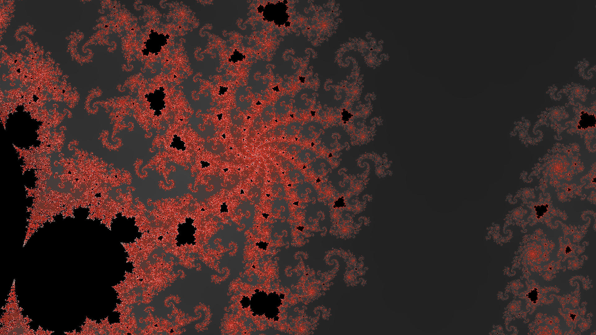
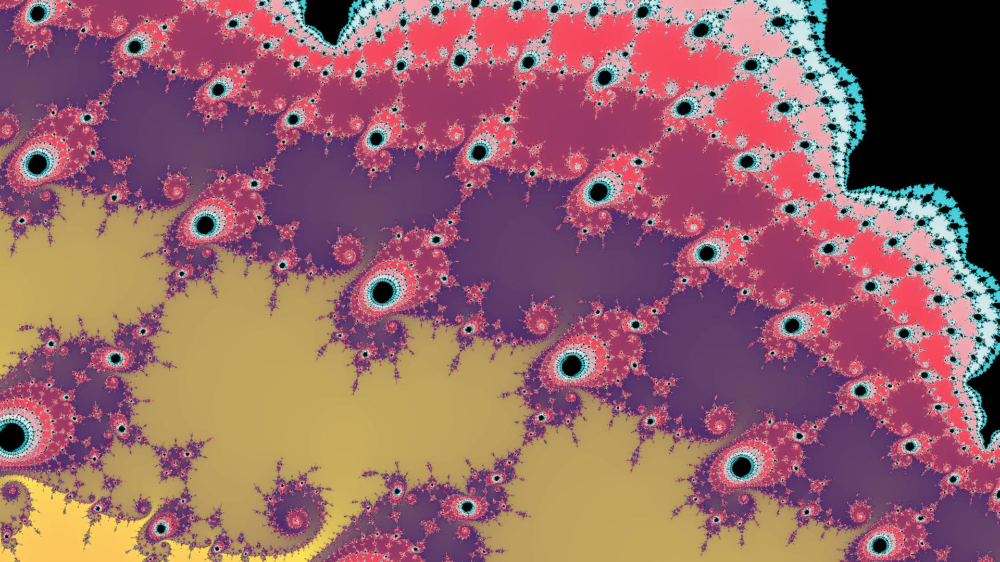
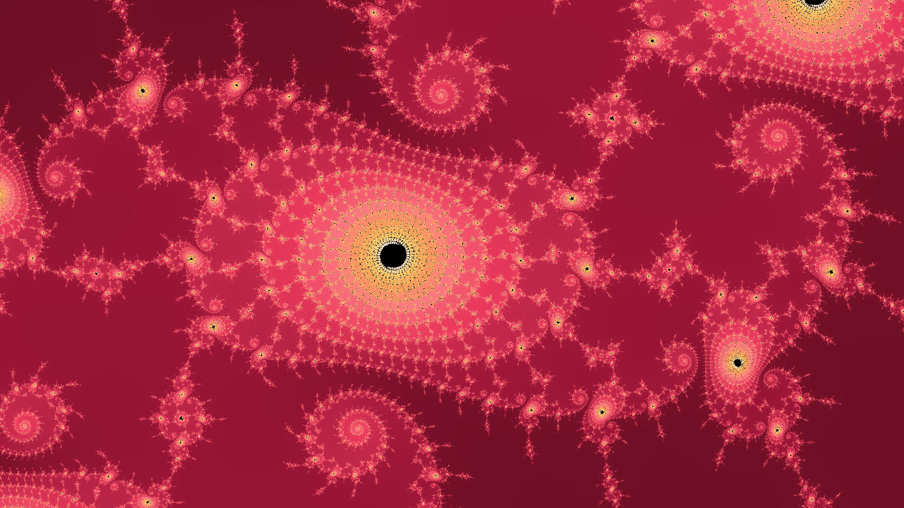
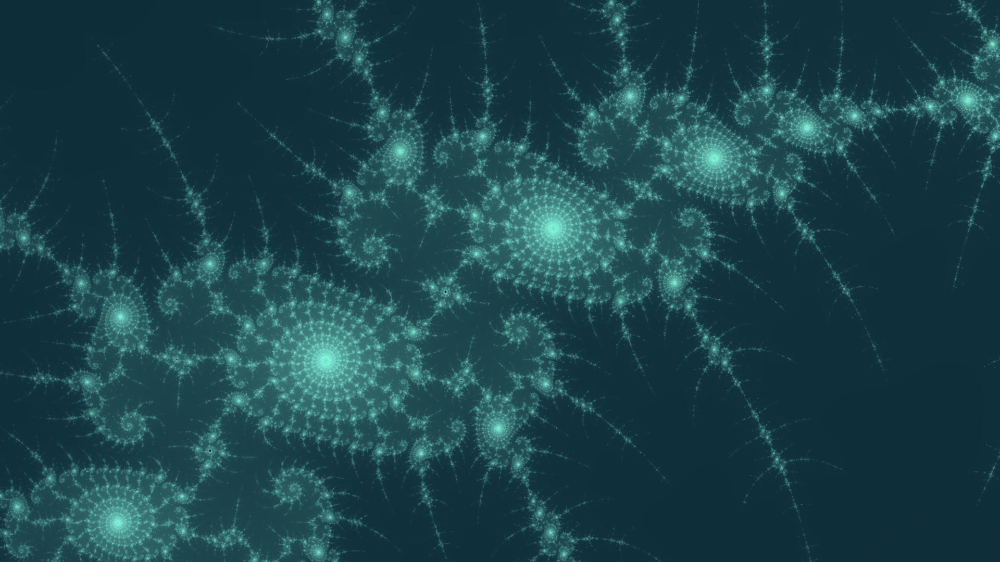
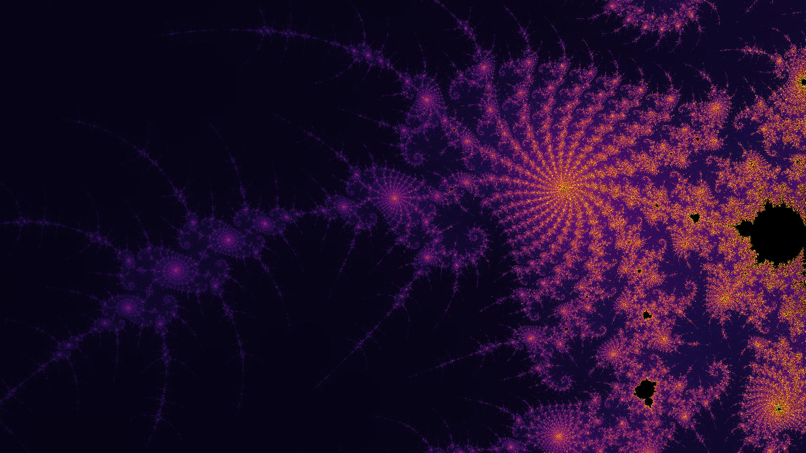
Home Lab
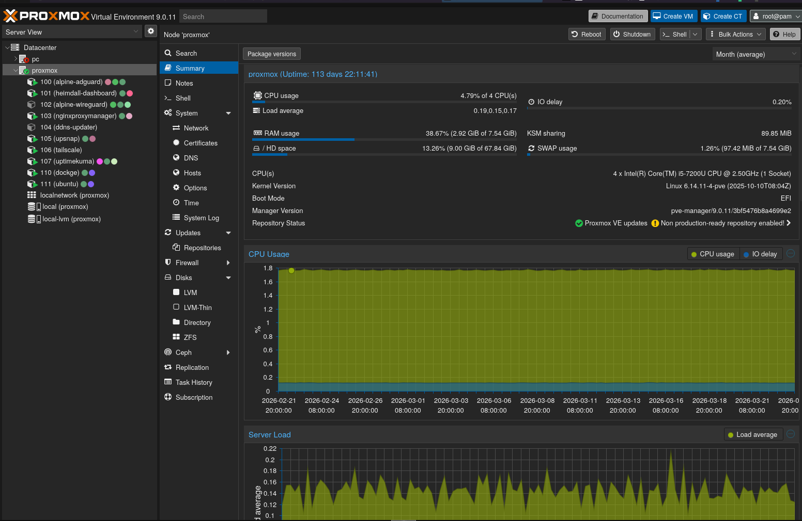

Moldova Job Market Scraper
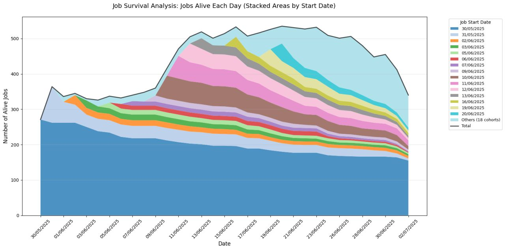
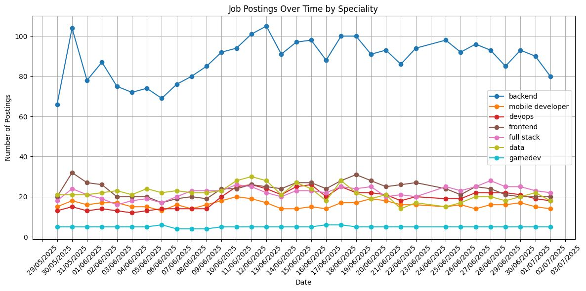
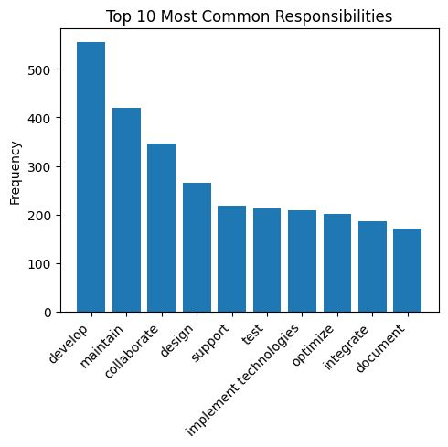
Keyboard Builds


Canti IoT
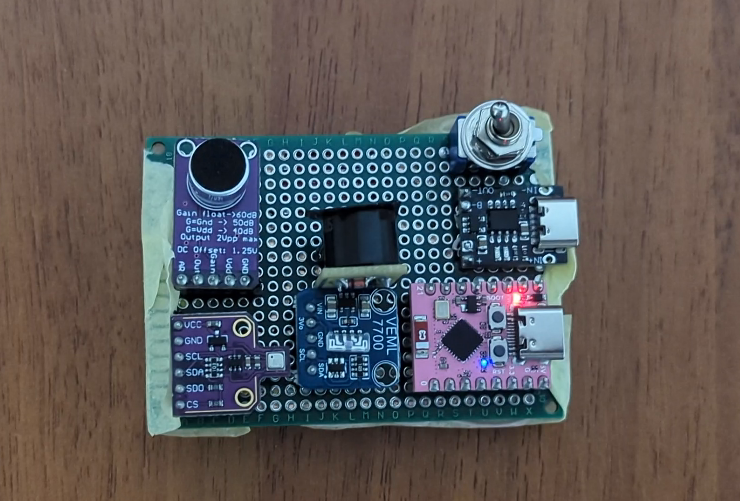
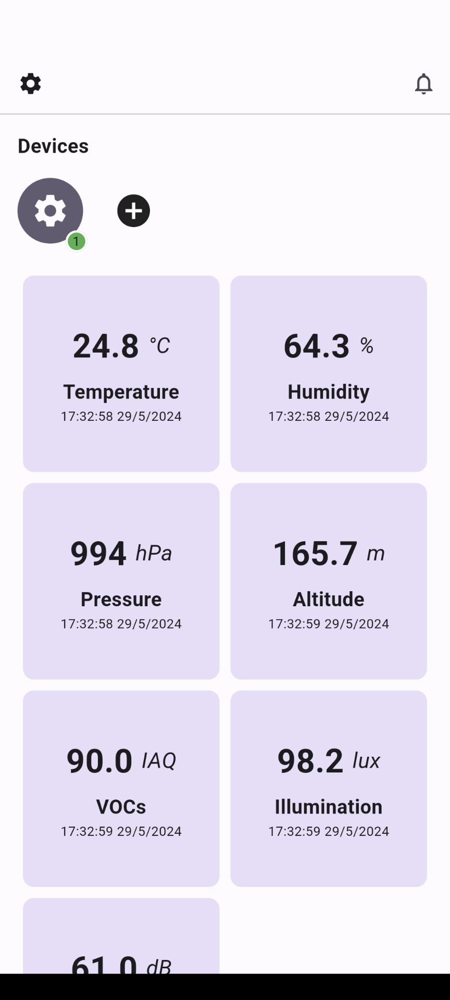
8-bit CPU
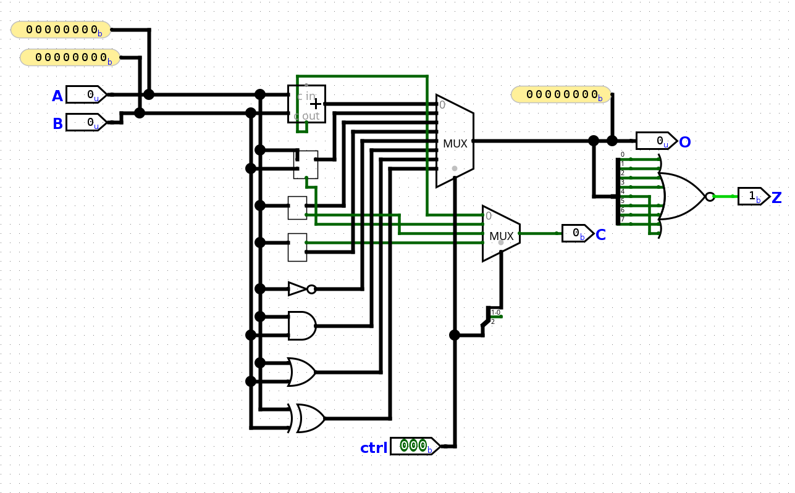
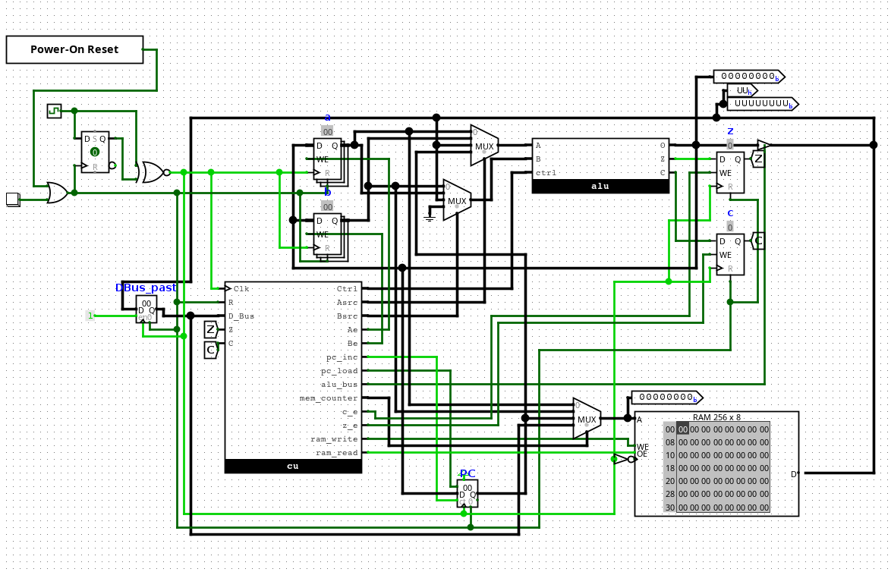